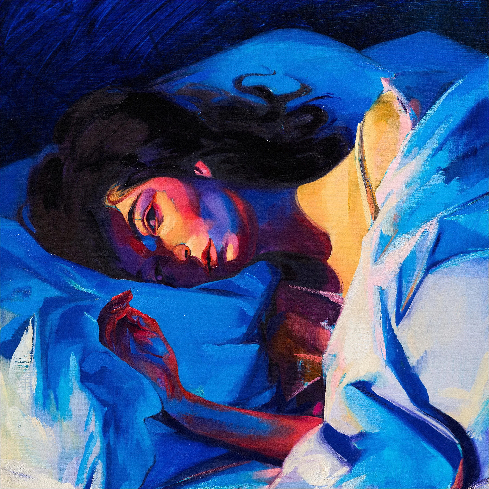

！伤心猫的音乐收藏室！
展厅介绍
hellohello 这里是伤心猫的音乐收藏室！我会在这里展示并介绍我喜欢的音乐专辑与音乐家
推荐专辑
Melodrama
点击即听
Melodrama是新西兰歌手Lorde的第二张录音室专辑，于2017年6月16日由Lava Records和Republic Records发行。该专辑由Lorde与Jack Antonoff共同制作，涵盖了流行、电子和另类流行等多种音乐风格。Melodrama以其深情的歌词、独特的声音和创新的制作方式赢得了广泛的赞誉，并在全球范围内取得了商业成功。
大把时间璀璨
点击即听
《大把时间璀璨》是独立摇滚乐队回春丹的第二张全长录音室专辑，于2025年8月26日正式发行，由乐队主唱刘西蒙担任核心词曲创作与音乐制作人，全专编曲由回春丹乐队共同完成。整张专辑以“时间与生命体验”为核心主题，从生命初啼的《降临》到纪念友人的《鲜花》，串联起市井日常、童年回望与自我松弛的鲜活表达，延续了乐队标志性的跳脱、市井又充满力量的摇滚气质。
我喜欢的歌手
Lady Gaga
Lady Gaga（本名Stefani Joanne Angelina Germanotta，1986年3月28日－）是一位美国歌手、词曲创作人、演员和时尚设计师。她以其独特的音乐风格、前卫的时尚造型和大胆的舞台表演而闻名。Lady Gaga在2008年凭借首张专辑《The Fame》崭露头角，其中包括热门单曲《Just Dance》和《Poker Face》。她的音乐涵盖了流行、电子舞曲、摇滚等多种风格，并多次获得格莱美奖和奥斯卡奖等重要奖项。除了音乐事业，Lady Gaga还积极参与慈善活动和社会议题，成为全球娱乐界的重要人物。
Taylor Swift
Taylor Swift（泰勒·斯威夫特，1989年12月13日－）是一位美国歌手、词曲创作人和演员。她以其叙事性的歌词、独特的音乐风格和多才多艺的表演而闻名。Taylor Swift在2006年以乡村音乐出道，随后逐渐转向流行音乐，并取得了巨大的商业成功。她的专辑包括《Fearless》、《1989》、《Reputation》等，涵盖了乡村、流行、摇滚等多种音乐风格。Taylor Swift多次获得格莱美奖、全美音乐奖和其他重要奖项，并以其个人生活和音乐作品引起广泛关注。
陈粒
陈粒（Chen Li，1990年9月15日－）是一位中国内地的独立音乐人、歌手和词曲创作人。她以其独特的音乐风格、深情的嗓音和富有诗意的歌词而受到广泛关注。陈粒的音乐作品涵盖了民谣、流行、摇滚等多种风格，她的歌曲常常以细腻的情感表达和独特的旋律结构而著称。她在音乐创作中注重个人情感的表达，作品中常融入生活体验和社会观察。陈粒在中国独立音乐界具有一定影响力，并获得了多个音乐奖项和认可。